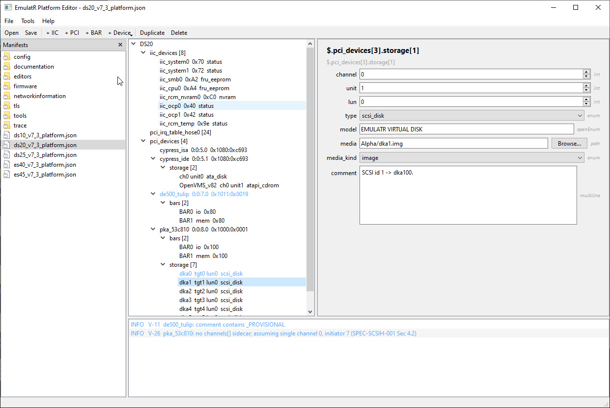

|
<< Click to Display Table of Contents >> Navigation: 8. Appendices - Developer Reference > 8.2 Tools > Platform Editor |
The Platform Editor is a desktop application for authoring and validating an EmulatR platform device manifest -- the <firmware>_platform.json file (e.g. ds20_v7_3_platform.json) that describes the guest device tree: the IIC devices, the PCI devices, and the storage media attached to each controller. Editing the manifest lets an operator re-populate the emulated board with a JSON edit instead of a rebuild.
The editor builds with every EmulatR build and is staged into the run directory at <run-dir>/editors/, beside the emulator executable:
•editors/platedit_qt.exe (Windows; platedit_qt.app on macOS, platedit_qt on Linux) -- the Qt Widgets GUI. On Windows the Qt runtime DLLs are deployed beside it, so it launches with a double-click.
•editors/platedit_tui -- a terminal-UI variant over the same core, for headless hosts.
•editors/schema/ and editors/catalog/ -- the data-driven field policy and the device catalog the editor reads at startup.
•editors/webui/mockup.html -- the original browser prototype, retained as a non-functional visual reference (its tree is hard-coded demo data; it does not load manifests).
Launch it directly, optionally with a manifest path argument (platedit_qt ds20_v7_3_platform.json), or use File > Open Folder... to point the Manifests panel at a directory (for example the run directory itself) and switch between the platform files it lists with a click. The last folder is remembered across launches.

Status: the Qt Widgets application is the shipping frontend (SPEC-PLATED-001 D-025). All editing is live: scalar edits write through the format-preserving core (an unchanged file round-trips byte-identically; a single field edit produces a one-token diff), and structural add/duplicate/delete regenerates only the touched container while every untouched section keeps its authored bytes, comments, and key order.
A menu bar and a device toolbar sit above the work area:
•Manifests (dock) -- the platform files of the opened folder; click to load.
•Structure (left) -- the manifest as a tree: the platform root, then iic_devices[] and pci_devices[], with each PCI controller expanding to its storage[], bars[], and channels[] children. Rows with validation findings are tinted by severity.
•Properties (right) -- the selected node's fields as a typed form, in authored order.
•Issues (bottom) -- the live validation list, recomputed on every edit and CRUD action; clicking an issue selects the offending node in the tree.
Menu bar: File (Open, Open Folder, Reload, Save, Save As, Quit), Tools > Validate, Help > About. Toolbar: Open, Save, then + IIC, + PCI, + BAR, + Device (a bus-aware picker), Duplicate, and Delete.
Each field renders a widget chosen by the data-driven policy in editors/schema/platform_schema.json, so edits stay well-typed and adding a manifest field never requires a rebuild:
Tier |
Widget / meaning |
|---|---|
int / size |
Spin box, bounded by the policy's min/max. |
hex |
Validated 0x entry (addresses, vendor/device IDs, class codes). |
enum |
Closed dropdown (e.g. storage type, media_kind, BAR kind, channel width). |
openEnum |
Editable combo with suggestions (e.g. PCI model, manufacturer). With no suggestion list (e.g. a device name) it renders as a plain text field. |
bool |
Check box. |
path |
Text input with a Browse button (media / image path). |
multiline |
Text area (comment fields). |
For a PCI device with a known model, a field that disagrees with the device catalog default carries a diverged badge (catalog value shown). manifest_version is read-only.
Delete asks for confirmation, and is refused outright on the interfaces the emulator presence-checks, so a manifest cannot be edited into an unbootable state:
•DS10 power/FRU set: IIC 0x70 (iic_system0), 0x72 (iic_system1), 0xA2 (iic_smb0 FRU).
•DS20 OCP set: IIC 0x40 / 0x42 (OCP badge / data), and the 0x9e get_sysvar discriminator.
The Issues pane recomputes on every change; each issue has a code, a severity (error / warn / info), and the offending node. Representative checks:
Code |
Severity |
Check |
|---|---|---|
V-01 |
error |
Duplicate PCI BDF (hose:bus:slot.func). |
V-02 |
error |
Duplicate IIC address. |
V-06 |
error |
IIC address is odd (the emulator rejects the manifest). |
V-15 |
error |
Invalid PCI vendor id (0, 0xffff, or non-hex). |
V-25 |
error |
SCSI target equals the HBA initiator_id. |
V-26 |
error / info |
Storage channel has no channels[] entry (error when a channels[] sidecar exists; informational single-channel assumption when the controller has none). |
V-27 |
error |
Narrow SCSI bus with a target > 7. |
V-07 |
warn |
Authored PCI identity diverges from the device catalog default for its model. |
The + Device picker is bus-aware: it reads the selected controller's class code, offers Virtual Disk / Virtual CD-ROM (and Virtual Tape / host CD-ROM on SCSI), maps the choice to the correct (type x media_kind) pair, and assigns the next free address on the bus -- SCSI walks target ids skipping the HBA's initiator id; IDE walks master/slave on channels 0 and 1. Set the new row's media to the disk image and it is ready to boot.
Save writes through the format-preserving core: JSON layout, key order and comments survive, only edited tokens (or structurally changed containers) differ, and the previous file is kept as .bak on overwrite. Reload discards in-memory edits after confirmation.
See Also